# A tibble: 6 × 16
# Groups: id [1]
experience weeks occupation industry south smsa married gender union
<int> <int> <fct> <fct> <fct> <fct> <fct> <fct> <fct>
1 3 32 white no yes no yes Male no
2 4 43 white no yes no yes Male no
3 5 40 white no yes no yes Male no
4 6 39 white no yes no yes Male no
5 7 42 white yes yes no yes Male no
6 8 35 white yes yes no yes Male no
# ℹ 7 more variables: education <int>, ethnicity <fct>, wage <dbl>, year <fct>,
# id <fct>, lwage <dbl>, t <int>Overview
As consultant statisticians, we are often approached by people who have already done some preliminary data analysis and who are looking to move onto something more complex. Often, they have done some methodology research. As missing data is present (or not present?) in most health related datasets, this is a topic that we regularly find ourselves discussing. Working through even the basics on this topics will mean one will also have to work through the challenging and varied (often cryptic) statistical nomenclature.
“Can we use mixed models, since they use all available data (?)”
This brief worked example was motivated by reading this paper that looked to have an interesting worked example that I thought could benefit from some figures.
Setting the scene
We’re going to use data from the AER package which contains Panel Data from a Study of Income Dynamics (read more here). In brief:
- Complete data on 595 individuals
- Collected between 1976 and 1982
- 7 (annual) observations per person
- The focus is on modelling the wage data over time
We acknowledge that the issues related to gender pay differences and trends are a sensitive subject and are simply using this example as it was and is a readily available, tidy, tangible, cross discipline dataset that allows the demonstration of the statistical principals of interest.
Research question
Are there differences in the rate of wage growth between males and females over time (in this dataset)?
That question is quite straightforward to answer here,; but the motivating commentary is really around how mixed effects model can be beneficial in the presence of systematic missing (follow-up) data - with a focus on parameter estimates and their graphical interpretation.
Missing follow-up data (lost to follow, attrition, drop out) is often seen in health research datasets. The data might be Missing At Random, it my be Missing Completely At Random, the important nuances of these are largely out of scope
R Session info
Data inspection
Let’s take an initial look at the data.
How much data do we have?
| Characteristic | Male, N = 3,6961 | Female, N = 4691 |
|---|---|---|
| t | ||
| 1 | 528 | 67 |
| 2 | 528 | 67 |
| 3 | 528 | 67 |
| 4 | 528 | 67 |
| 5 | 528 | 67 |
| 6 | 528 | 67 |
| 7 | 528 | 67 |
| 1 n | ||
And, what does it look like…
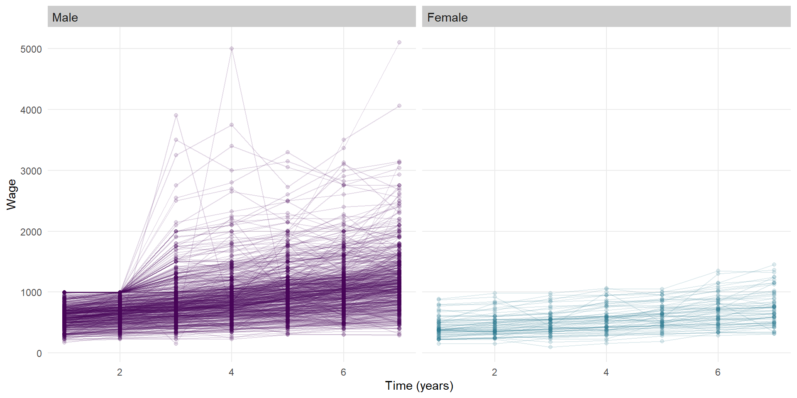
We can see that, generally the wage for most individuals goes up at a fairly steady rate for most individuals across the 7 years of follow-up. We can also see some characteristics (upper skew, heteroskedasticity) that are likely to invalidate some modeling assumptions. Let’s look at the log of wage.
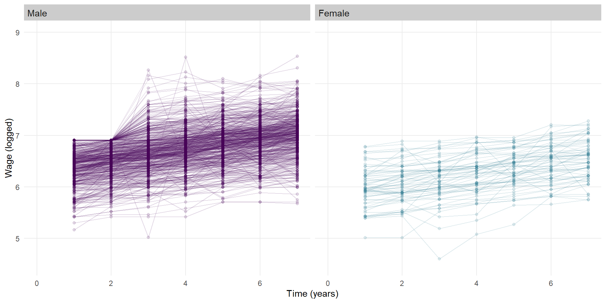
Modelling the complete data
Erroneous basic linear regression model
To address the question of “are there differences in the rate of wage growth”, we are going to fit a gender by time interaction term which will give us an indication of if ‘as time changes’ the outcome (logged wage) changes at a different rate for each gender.
mod1 <- lm(lwage ~ gender * t, data = dat)
export_summs(mod1, error_format = "[{conf.low}, {conf.high}]",
error_pos = "right", digits = 3,
statistics = c(N = "nobs"))| Model 1 | ||
|---|---|---|
| (Intercept) | 6.340 *** | [6.312, 6.368] |
| genderFemale | -0.456 *** | [-0.540, -0.372] |
| t | 0.097 *** | [0.091, 0.104] |
| genderFemale:t | -0.005 | [-0.024, 0.014] |
| N | 4165 | |
| *** p < 0.001; ** p < 0.01; * p < 0.05. | ||
We can see there is an effect of gender present, and an effect of time (the growth overtime we saw in the original plot), but the very small beta coefficient (relative to the scale of data we are working with) and the p-value of 0.6 are suggestive that the rate of wage growth over time does not differ significantly between genders.
To view this, we’re not going to use geom_smooth or stat_summary as we might do on the fly. To set this up for later in the article, we’ll create a new dataset and use predictions to draw our (straight) line.
newdat <- expand.grid(t = 1:7, gender = c("Male", "Female")) %>%
mutate(gender = factor(gender),
gender = relevel(gender, "Male"),
id = c(rep(1, 7), rep(2, 7)))
p_mod1 <- cbind(newdat,
lwage = predict(mod1, newdat, interval = "prediction"))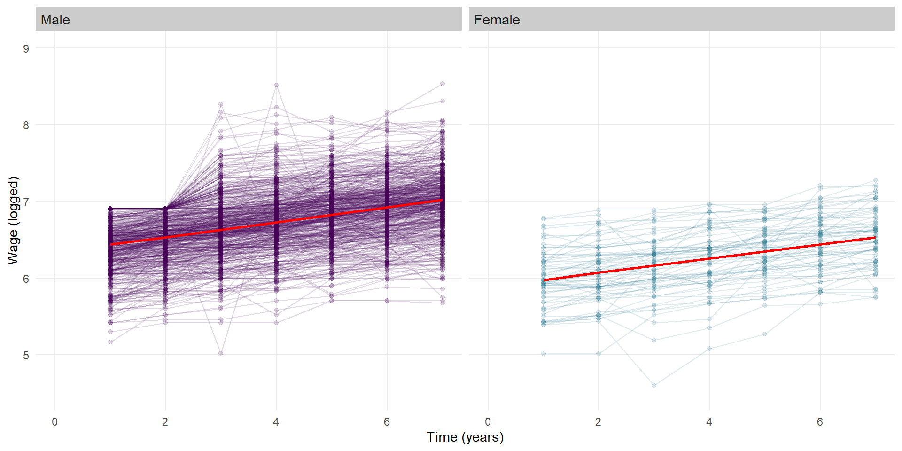
Okay, these red fitted lines look like quite a good ‘line of best fit’, they pass the eye test of broadly representing the trends of the data well.
Fitted with a prediction confidence interval, we see.
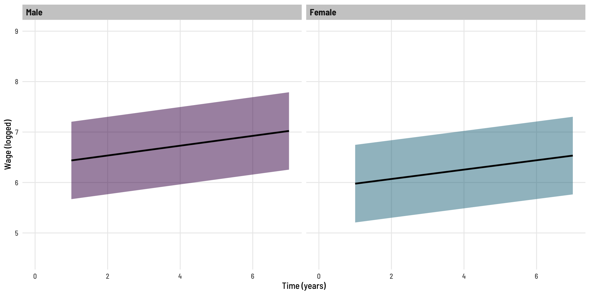
These lines look parallel - suggestive of no difference in growth rates between the genders (the non-signficant interaction term we saw).
Of course, we have no adjusted for the within person correlation present in the data. The model above is inappropriate as one of the main assumptions of the model is violated - the data points are not all independent (we know there are 7 from each individual).
Mixed effects model
Here we run a fairly basic linear mixed effects model, the model has the same fixed effects terms as above (the interaction term we are curious about) but also includes a random effect, that is, the intercept is allowed to varied for each individual.
mod2 <- lmer(lwage ~ gender * t + (1 | id), data = dat)
export_summs(mod2, error_format = "[{conf.low}, {conf.high}]",
error_pos = "right", digits = 3,
statistics = c(N = "nobs"))| Model 1 | ||
|---|---|---|
| (Intercept) | 6.340 *** | [6.307, 6.373] |
| genderFemale | -0.456 *** | [-0.553, -0.358] |
| t | 0.097 *** | [0.095, 0.100] |
| genderFemale:t | -0.005 | [-0.012, 0.003] |
| N | 4165 | |
| *** p < 0.001; ** p < 0.01; * p < 0.05. | ||
Lets also fit the predicted values from this model.
newdat <- expand.grid(t = 1:7, gender = c("Male", "Female")) %>%
mutate(gender = factor(gender),
gender = relevel(gender, "Male"),
id = c(rep(1, 7), rep(2, 7)))
p_mod2 <- cbind(newdat,
predictInterval(mod2, newdat, which = "fixed", n.sims = 1000, level = 0.95, type="linear.prediction"))Slight segway
With the standard linear regression model (above), we used predict to generate a prediction interval. With linear mixed effects models, we do no have the same function available (that will incorporate the random effects variability in the interval), so rather than calculating these, we simulate! Some extra content on this can be read here or (somewhat less so) here. This use of simulation is part of the reason behind the confidence intervals not being parallel.
Back to our Mixed effects model
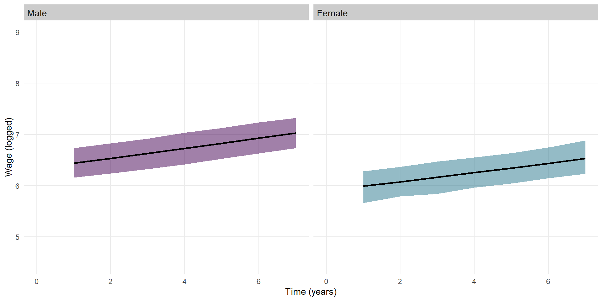
When we compare the output of this model with the earlier (erroneous) model, we see two expected things.
export_summs(mod1, mod2,
error_format = "[{conf.low}, {conf.high}]",
error_pos = "right", digits = 3,
statistics = c(N = "nobs"))| Model 1 | Model 2 | |||
|---|---|---|---|---|
| (Intercept) | 6.340 *** | [6.312, 6.368] | 6.340 *** | [6.307, 6.373] |
| genderFemale | -0.456 *** | [-0.540, -0.372] | -0.456 *** | [-0.553, -0.358] |
| t | 0.097 *** | [0.091, 0.104] | 0.097 *** | [0.095, 0.100] |
| genderFemale:t | -0.005 | [-0.024, 0.014] | -0.005 | [-0.012, 0.003] |
| N | 4165 | 4165 | ||
| *** p < 0.001; ** p < 0.01; * p < 0.05. | ||||
- The coefficients have the same value in each model as these represent the fixed effect
- The confidence intervals for those coefficients are slightly narrower in Model 2, this is because some of the variation present [within Model 1] is explained by the random effects [present in Model 2 and not Model 1].
We can see this when we plot the predicted values side by side.
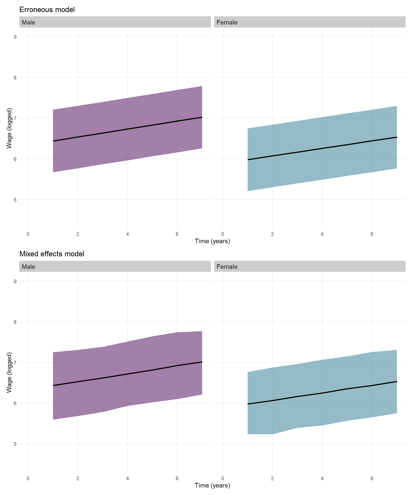
Introduction of missing data
We now create a modified copy of the dataset whereby wage data is missing as a function of the previous wage value. That is, as one’s wage gets higher, there probability of not showing completing the following years survey is increased. I was unable to implement the exact same missing data function as the inspiring example but the below is similar and serves the same purpose. Without diving too far down the missing data hole (intended), this is an example of data [‘missing At random’](https://www.ncbi.nlm.nih.gov/books/NBK493614/#:~:text=Missing%20completely%20at%20random%20(MCAR,and%20those%20with%20complete%20data.), in that the fact that the data is missing is related to something observed (by design), that being, the previous years wage value.
mdat <- dat %>%
group_by(id) %>%
mutate(plwage = c(0, lwage[1:6]),
pt = 1 / (1+exp(-6.9 + plwage)),
mlwage = case_when(pt > 0.5 ~ lwage,
pt < 0.5 ~ 0),
is_zero_following = ifelse(mlwage == 0, 1, 0),
# Use cummax to make this vector 1 from the first occurrence of 0 onwards
is_zero_following = cummax(is_zero_following),
# Replace wage with 0 where is_zero_following is 1
mlwage = ifelse(is_zero_following == 1, NA, mlwage)) What impact has this had on the data? We can see a significant loss of data, especially across the latter years.
mdat %>%
group_by(t) %>%
summarise(N = sum(!is.na(mlwage)))# A tibble: 7 × 2
t N
<int> <int>
1 1 595
2 2 514
3 3 493
4 4 465
5 5 417
6 6 345
7 7 272This also looks to have impacted males more than females.
mdat %>%
ungroup() %>%
filter(!is.na(mlwage)) %>%
select(gender, t) %>%
tbl_summary(by = gender,
statistic = all_categorical() ~ "{n}")| Characteristic | Male, N = 2,6511 | Female, N = 4501 |
|---|---|---|
| t | ||
| 1 | 528 | 67 |
| 2 | 447 | 67 |
| 3 | 426 | 67 |
| 4 | 398 | 67 |
| 5 | 353 | 64 |
| 6 | 283 | 62 |
| 7 | 216 | 56 |
| 1 n | ||
Visually, our data looks like this:
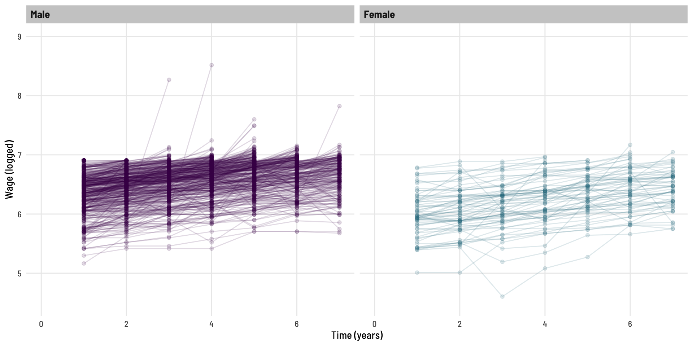
What what is missing?
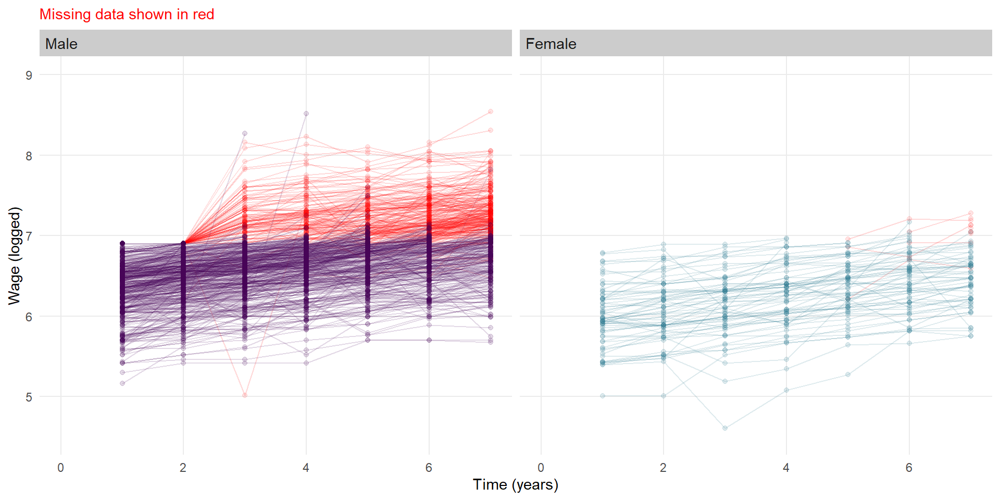
Missing - Erroneous basic linear regression model
mod3 <- lm(mlwage ~ gender * t, data = mdat)
export_summs(mod3, error_format = "[{conf.low}, {conf.high}]",
error_pos = "right", digits = 3,
statistics = c(N = "nobs"))| Model 1 | ||
|---|---|---|
| (Intercept) | 6.379 *** | [6.354, 6.405] |
| genderFemale | -0.462 *** | [-0.533, -0.390] |
| t | 0.047 *** | [0.040, 0.053] |
| genderFemale:t | 0.032 *** | [0.016, 0.049] |
| N | 3101 | |
| *** p < 0.001; ** p < 0.01; * p < 0.05. | ||
Now the model is indicating that there is a strong interaction effect for gender by time. The coefficient of the interaction term implies that (logged) wages increase at a faster rate (over time) for females than they do for males. Let’s visual this alongside our modified dataset.
newdat <- expand.grid(t = 1:7, gender = c("Male", "Female"), id = 1) %>%
mutate(gender = factor(gender),
gender = relevel(gender, "Male"))
p_mod3 <- cbind(newdat,
lwage = predict(mod3, newdat, interval = "prediction"))We can see the predicted line and bands (95% prediction interval) represent the (non-missing) data well, and we can see the difference in slope between genders - the observed signficant interaction term.
Missing - Mixed effects model
mod4 <- lmer(mlwage ~ gender * t + (1 | id), data = mdat)
export_summs(mod4, error_format = "[{conf.low}, {conf.high}]",
error_pos = "right", digits = 3,
statistics = c(N = "nobs"))| Model 1 | ||
|---|---|---|
| (Intercept) | 6.341 *** | [6.311, 6.372] |
| genderFemale | -0.457 *** | [-0.546, -0.368] |
| t | 0.090 *** | [0.087, 0.093] |
| genderFemale:t | 0.003 | [-0.004, 0.011] |
| N | 3101 | |
| *** p < 0.001; ** p < 0.01; * p < 0.05. | ||
When we run the mixed effects model on the dataset with missing data, we (correctly) do not see a significant interaction effect.
In fact:
| ME - Missing | ME - Complete | |||
|---|---|---|---|---|
| (Intercept) | 6.341 *** | [6.311, 6.372] | 6.379 *** | [6.354, 6.405] |
| genderFemale | -0.457 *** | [-0.546, -0.368] | -0.462 *** | [-0.533, -0.390] |
| t | 0.090 *** | [0.087, 0.093] | 0.047 *** | [0.040, 0.053] |
| genderFemale:t | 0.003 | [-0.004, 0.011] | 0.032 *** | [0.016, 0.049] |
| N | 3101 | 3101 | ||
| *** p < 0.001; ** p < 0.01; * p < 0.05. | ||||
Our mixed effects model on the dataset with a lot of missing data (ME - Missing) generates quite similar estimates to what we know as truth from the model on the complete data (ME - Complete).
To comparatively visualise this.
newdat <- expand.grid(t = 1:7, gender = c("Male", "Female"), id = 1) %>%
mutate(gender = factor(gender),
gender = relevel(gender, "Male"))
p_mod4 <- cbind(newdat,
predictInterval(mod4, newdat, which = "fixed", n.sims = 1000, level = 0.95))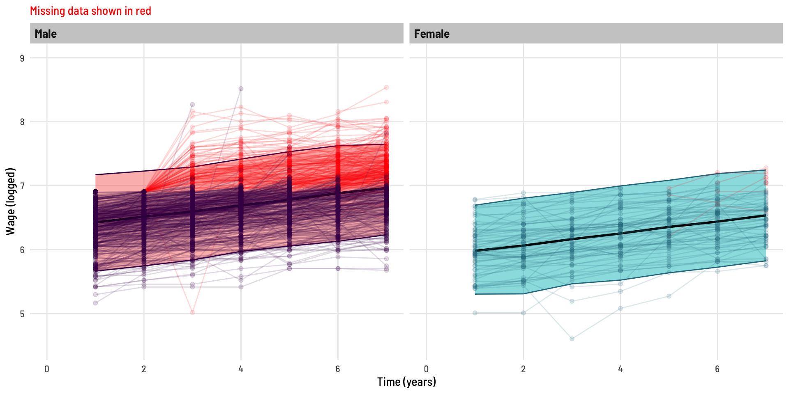
These lines (predicted lines; by gender) look parallel (as they should), notably with the Males, we see the predicted line “pulled up” in the direction of the missing data even though that data was not available to the model - this is because the model has leveraged the slope of the data it did have access to, at the individual (person) level, when converging on its estimates.
If the erroneous interaction effect (non-parallel lines) was not obvious in the plot separated by gender, here we see the predictred lines on the same plot for each model.
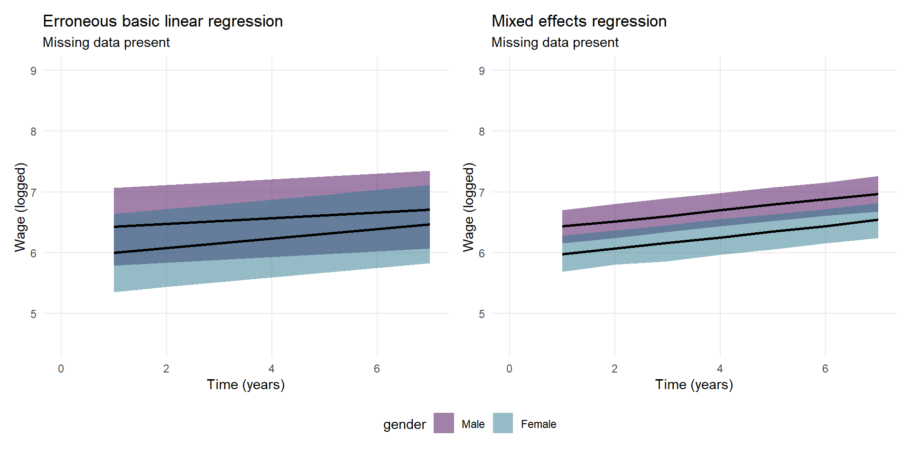
Bonus content
Less aggressive missingness
What if we whip through the same process and comparison, in a setting that ‘less aggressively’ has drop out with increasing wage and also some additional random missingness throughout.
mdat <- dat %>%
group_by(id) %>%
mutate(plwage = c(0, lwage[1:6]),
pt = 1 / (1+exp(-7.2 + plwage))) %>% # Less aggressive dropout as a function of age
rowwise() %>%
mutate(pt = case_when(pt > 0.5 & runif(1) < 0.10 & t > 2 ~ 0, # Adding an underlying random component to dropout
T ~ pt)) %>%
group_by(id) %>%
mutate(mlwage = case_when(pt > 0.5 ~ lwage,
pt < 0.5 ~ 0),
is_zero_following = ifelse(mlwage == 0, 1, 0),
is_zero_following = cummax(is_zero_following),
mlwage = ifelse(is_zero_following == 1, NA, mlwage)) | Characteristic | Male, N = 2,7681 | Female, N = 3601 |
|---|---|---|
| t | ||
| 1 | 528 | 67 |
| 2 | 528 | 67 |
| 3 | 473 | 55 |
| 4 | 391 | 51 |
| 5 | 333 | 45 |
| 6 | 276 | 40 |
| 7 | 239 | 35 |
| 1 n | ||
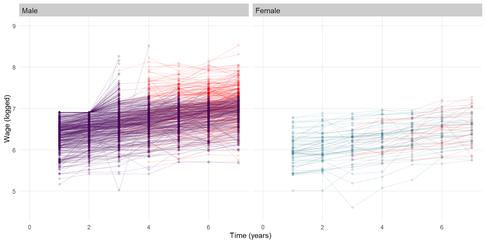
| ME - Complete | Basic - Missing | ME - Missing | ||||
|---|---|---|---|---|---|---|
| (Intercept) | 6.340 *** | [6.307, 6.373] | 6.384 *** | [6.356, 6.412] | 6.342 *** | [6.311, 6.374] |
| genderFemale | -0.456 *** | [-0.553, -0.358] | -0.485 *** | [-0.567, -0.402] | -0.445 *** | [-0.538, -0.352] |
| t | 0.097 *** | [0.095, 0.100] | 0.071 *** | [0.064, 0.078] | 0.093 *** | [0.090, 0.096] |
| genderFemale:t | -0.005 | [-0.012, 0.003] | 0.017 | [-0.003, 0.037] | -0.009 | [-0.017, 0.000] |
| N | 4165 | 3128 | 3128 | |||
| *** p < 0.001; ** p < 0.01; * p < 0.05. | ||||||
We can see, the (erroneous) basic linear regression still inappropriately suggests a significant interaction effect is present, while the mixed effects models continues to perform well (relative to the model using the complete data).
Completely random missingness
What if missingness (simulated dropout) is complete random?
mdat <- dat %>%
group_by(id) %>%
rowwise() %>%
mutate(pt = 1,
pt = case_when(runif(1) < 0.10 & t > 2 ~ 0, # Implementing random dropout
T ~ pt)) %>%
group_by(id) %>%
mutate(mlwage = case_when(pt > 0.5 ~ lwage,
pt < 0.5 ~ 0),
is_zero_following = ifelse(mlwage == 0, 1, 0),
is_zero_following = cummax(is_zero_following),
mlwage = ifelse(is_zero_following == 1, NA, mlwage)) 
| ME - Complete | Basic - Missing | ME - Missing | ||||
|---|---|---|---|---|---|---|
| (Intercept) | 6.340 *** | [6.307, 6.373] | 6.327 *** | [6.298, 6.356] | 6.333 *** | [6.301, 6.365] |
| genderFemale | -0.456 *** | [-0.553, -0.358] | -0.449 *** | [-0.537, -0.362] | -0.446 *** | [-0.543, -0.350] |
| t | 0.097 *** | [0.095, 0.100] | 0.104 *** | [0.097, 0.111] | 0.100 *** | [0.097, 0.103] |
| genderFemale:t | -0.005 | [-0.012, 0.003] | -0.005 | [-0.026, 0.017] | -0.007 | [-0.016, 0.003] |
| N | 4165 | 3319 | 3319 | |||
| *** p < 0.001; ** p < 0.01; * p < 0.05. | ||||||
The basic regression model is no long suggesting there is a significant gender by time interaction effect, and comparatively, all three models give similar estimates.
Conclusion
We have seen that in the face of missing follow-up data, it is a grave mistake to continue with a basic linear regression model. We have then seen that mixed effects models are extremely robust in dealing with the issue and return coefficients and standard errors similar to those of a complete-data model.
Acknowledgements
Thanks to Elizabeth McKinnon, Zac Dempsey and Wesley Billingham for reviewing this post. You can look forward to seeing posts from these other team members here in the coming weeks and months.
Reproducibility Information
To access the qmd (Quarto markdown) files as well as any R scripts or data that was used in this post, please visit our GitHub:
https://github.com/The-Kids-Biostats/The-Kids-Biostats.github.io
The session information can also be seen below.
R version 4.3.1 (2023-06-16 ucrt)
Platform: x86_64-w64-mingw32/x64 (64-bit)
Running under: Windows 10 x64 (build 19044)
Matrix products: default
locale:
[1] LC_COLLATE=English_Australia.utf8 LC_CTYPE=English_Australia.utf8
[3] LC_MONETARY=English_Australia.utf8 LC_NUMERIC=C
[5] LC_TIME=English_Australia.utf8
time zone: Australia/Perth
tzcode source: internal
attached base packages:
[1] stats graphics grDevices utils datasets methods base
other attached packages:
[1] lubridate_1.9.3 forcats_1.0.0 stringr_1.5.1 dplyr_1.1.4
[5] purrr_1.0.2 readr_2.1.5 tidyr_1.3.1 tibble_3.2.1
[9] ggplot2_3.5.1 tidyverse_2.0.0 patchwork_1.2.0 parameters_0.21.3
[13] jtools_2.2.2 gtsummary_1.7.2 AER_1.2-12 survival_3.5-7
[17] sandwich_3.1-0 lmtest_0.9-40 zoo_1.8-12 car_3.1-2
[21] carData_3.0-5 merTools_0.6.1 arm_1.13-1 MASS_7.3-60.0.1
[25] lme4_1.1-35.1 Matrix_1.6-5
loaded via a namespace (and not attached):
[1] rlang_1.1.3 magrittr_2.0.3 multcomp_1.4-25
[4] furrr_0.3.1 compiler_4.3.1 vctrs_0.6.5
[7] pkgconfig_2.0.3 crayon_1.5.2 fastmap_1.1.1
[10] ellipsis_0.3.2 backports_1.4.1 labeling_0.4.3
[13] pander_0.6.5 utf8_1.2.4 promises_1.3.0
[16] rmarkdown_2.26.2 markdown_1.12 tzdb_0.4.0
[19] nloptr_2.0.3 xfun_0.43 jsonlite_1.8.8
[22] later_1.3.2 broom_1.0.5 parallel_4.3.1
[25] R6_2.5.1 stringi_1.8.4 parallelly_1.37.1
[28] boot_1.3-28.1 numDeriv_2016.8-1.1 estimability_1.4.1
[31] assertthat_0.2.1 Rcpp_1.0.12 iterators_1.0.14
[34] knitr_1.46 httpuv_1.6.15 splines_4.3.1
[37] timechange_0.3.0 tidyselect_1.2.1 rstudioapi_0.16.0
[40] abind_1.4-5 yaml_2.3.8 codetools_0.2-19
[43] listenv_0.9.1 lmerTest_3.1-3 lattice_0.22-5
[46] shiny_1.8.1.1 withr_3.0.0 bayestestR_0.13.1
[49] coda_0.19-4.1 evaluate_0.23 future_1.33.2
[52] huxtable_5.5.6 xml2_1.3.6 pillar_1.9.0
[55] foreach_1.5.2 insight_0.19.7 generics_0.1.3
[58] hms_1.1.3 munsell_0.5.1 commonmark_1.9.1
[61] scales_1.3.0 minqa_1.2.6 globals_0.16.3
[64] xtable_1.8-4 glue_1.7.0 emmeans_1.10.0
[67] tools_4.3.1 mvtnorm_1.2-4 grid_4.3.1
[70] datawizard_0.9.1 colorspace_2.1-0 nlme_3.1-164
[73] Formula_1.2-5 cli_3.6.2 fansi_1.0.6
[76] viridisLite_0.4.2 broom.helpers_1.15.0 gt_0.10.1
[79] gtable_0.3.5 broom.mixed_0.2.9.5 sass_0.4.9
[82] digest_0.6.35 TH.data_1.1-2 farver_2.1.2
[85] htmlwidgets_1.6.4 htmltools_0.5.8.1 lifecycle_1.0.4
[88] mime_0.12 blme_1.0-5